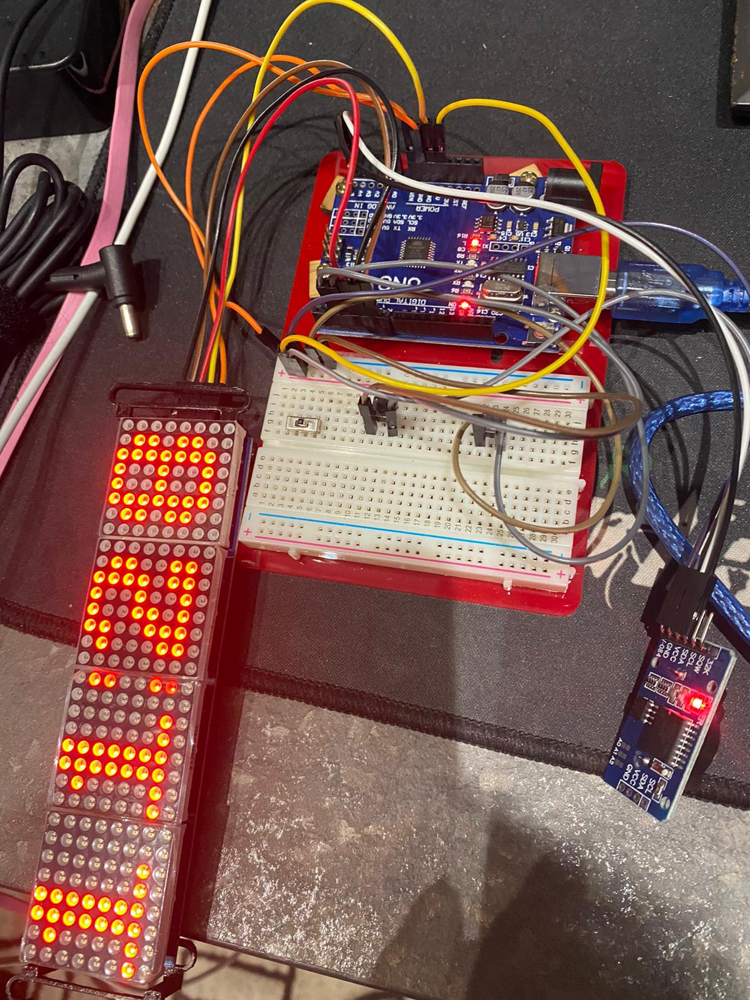

Final Project
Step 1: Planning
Like every and all great projects, it always starts with planning, and hence that was what i did in the first week - Sketching and Drawing. I wanted to make a clock with a 7219 matrix display, that was able to keep the time even when the power was unplugged. Hence, i sketched out a basic design.

Step 2: 3D Modeling
The first version of the casing was simple as i only drew out the basic outlines and measurements for it. The design was similar to my music box, hence i copied the method. I also included a hole for my matrix display.
Version 1
[Click here to see the Music Box]
Now, with the general shape of the casing done, i had to design various mounts to hold up 5 different components.
Support for Matrix
The first item was the 7219 Matrix Display.
I noticed that there were holes behind the matrix display, hence i designed it to ensure that M3 screws were able to fit in, mounting the matrix to the case later on.
Support for Arduino and RTC
The second item was the arduino nano and the DS3231 RTC Module.
The RTC Module would be screwed onto the support using M3 screws, while the arduino nano would be
snapped in place onto the support for ease of access for wiring later on.
The entire would then be mounted onto the case using screws.
Support for Push Buttons
Finally, third item was the 2 push buttons. Additionally, i also had to design the top parts of the push buttons.
The buttons would be glued onto the support, while the top part were glued onto the buttons itself.
Holes were also included to mount the support onto the casing.
Final Design
I then fitted every component into the casing, to check if everything fits before sending to components to 3D Print.
I also edited in holes onto the casing to mount the various supports.
Step 3: 3D Printing and Laser Cutting
Machine Settings:
| Machine | Ultimaker 2+ |
| Material | Black PLA |
| Layer Height | 0.2mm |
| Infill Density and Pattern | 20%, Grid |
| Printing speed | 80mm/s |
| Supports and Placements | Normal, Touching Build Plate |
| Build Plate Adhesion | Brim |
To begin printing, i first exported all of my 3D Models from Fusion360 into Cura and used the above settings to prepare it for 3D printing.


The stl files were then transfered onto an SD card, before being inserted into the 3D Printer ready to be printed.
Matrix Support


Arduino and RTC Support
Button Support


| Machine | Epilog Fusion Pro |
| Material Thickness and Type | 3mm Clear Acrylic / 3mm Green Acrylic |
| Cut Settings |
Speed - 18 Power - 90 Frequency - 90 |
To begin laser cutting, I had to first convert all of my pieces into dxf files and transfer them over to LibreCad, where i put all of the drawings into the same file. The drawing is then transfered to the laser cutter, where it began cutting out my pieces.


Step 4: Electronics
After completing the hardware side of my project, i moved onto the software. I first planned out the connections by drawing them out on InkScape.
Wiring Diagram

Step 5: Coding and Testing
Next, I made a code for the clock, with reference to a video showcasing a digital clock online.
[Click Here to see where i got the code]
How It Works:
The Clock is controlled using 2 push buttons, when both buttons are simultaneously pressed, the clock goes into set mode, where the user has to set the hours and minutes. Additionally, the brightness of the matrix can also be adjusted after the hours and minutes are set.
Issues Faced:
Initially, during testing I wanted to also include the use of neopixels into my project, so as to
produce different colours. However upon connecting and testing, I realised that there was not enough
power being supplied into the 7219 matrix display, hence causing the matrix display to hang. This was
due to the fact that the matrix display draws in too much power for the arduino board to supply for
both the matrix display and the neopixels.
The second issue I faced, was when I changed the push button switches to touch sensors, however upon
doing so, I faced a similar issue where not enough power was being supplied.
Lastly, The on/off switch which i wanted to add in was also no possible, as cutting the connection
between the vcc and the matrix display would actually make it unable to work.
Hence, I have decided to forgo all 3 ideas.
However, after all that the tweaking the code does work, and the clock is able to function.
Final Testing:
